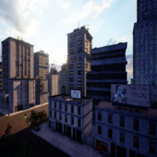
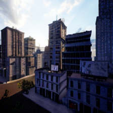

MISSIONOS · OFFLINE MODEL DIAGNOSIS · 2026-09-27
なぜ、WAMは別の街を描いたのか
投影画像の欠損と時間条件に、結果が強く依存しました。欠損なし・時間ゼロでは元の街区に近い静止画像を保てます。飛行の修正完了ではありません。
6条件事前固定・実ANWM
元画像と完全一致元の失敗予測を再現
$10.44 / $13累計見積り・GPU削除済み
画像だけを変えた時間4の条件は、数値基準内でも水面のような誤生成が残ります。数値合格を、そのまま飛行判断の根拠にしていません。
入力と圧縮・復元
同じ横浜画像での4条件
移動ゼロ、同じ履歴・seed 42・250 diffusion steps。4条件は同じ過去RGBD参照・既知領域で評価しています。
公式データの参考画像
最初のtar shardの最初のJPEGを事前に選び、16回繰り返しました。実際の時系列・公式ベンチマーク・一般性能の評価ではありません。
出力を見る前に選んだ1枚
公式データ・元画像

公式飛行履歴の評価ではありません。
現在画像全体・時間4
公式データの参考入力

輝度MAE 7.76数値基準内
同じ1枚を16回反復
現在画像全体・時間0
公式データの参考入力
輝度MAE 6.40数値基準内
同じ1枚を16回反復
次に直す部分
移動先でも、過去の観測を正しい位置に保つ投影が必要です。空のように深度がない領域と、建物に隠れて見えない領域を区別し、未知領域を明示します。現在画像の丸ごとの代入や時間ゼロを、そのまま移動候補に採用していません。